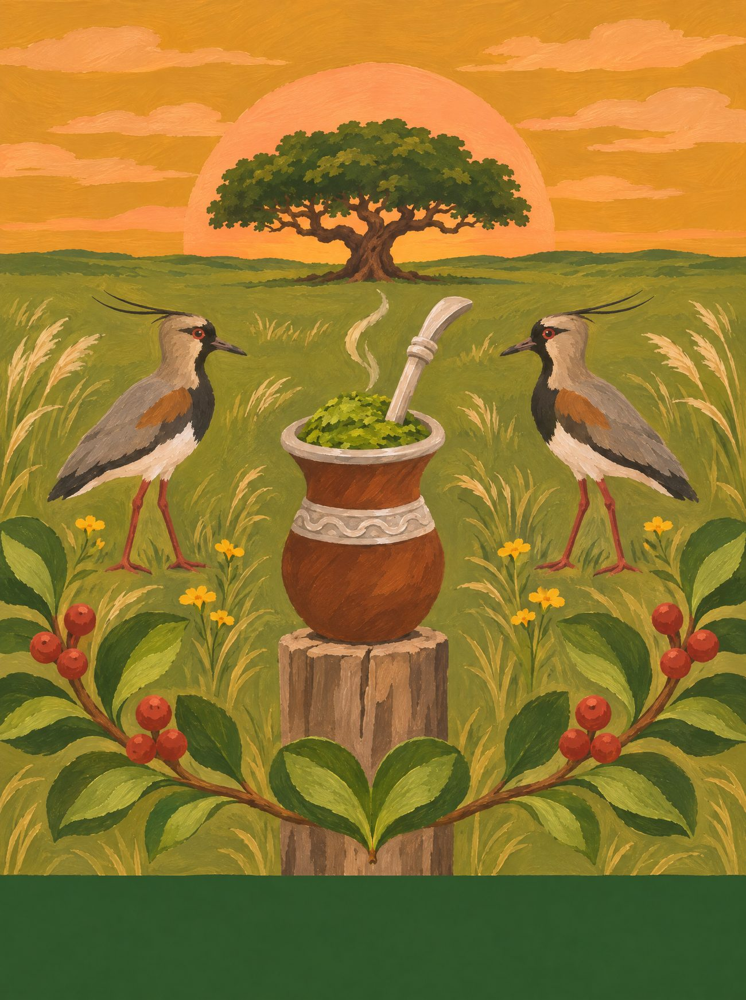
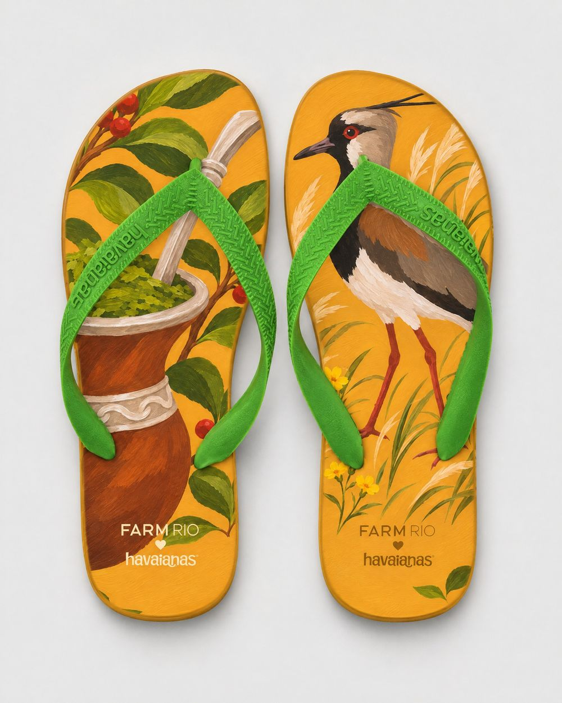
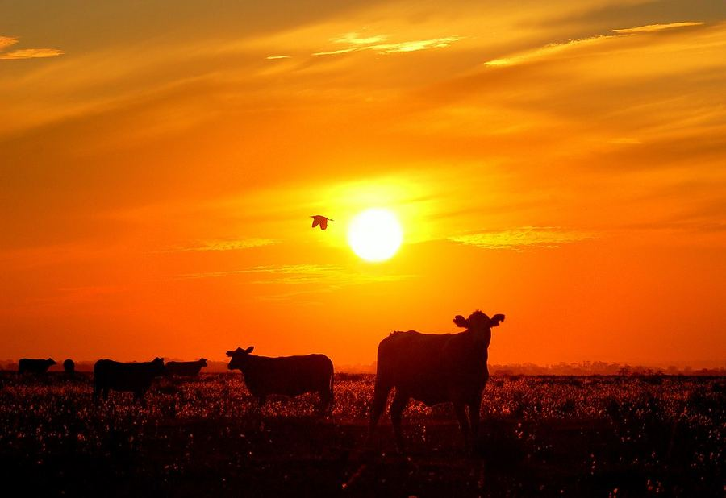
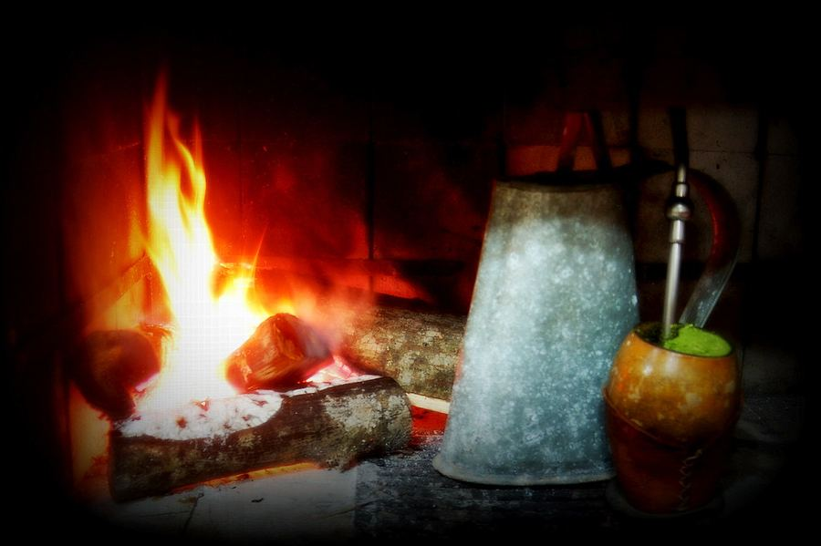
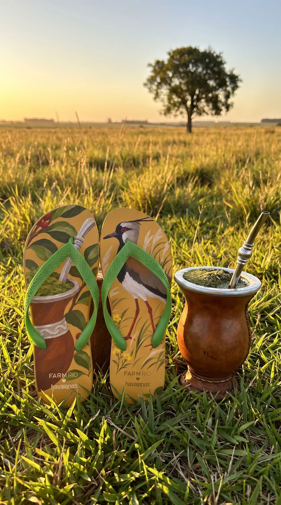
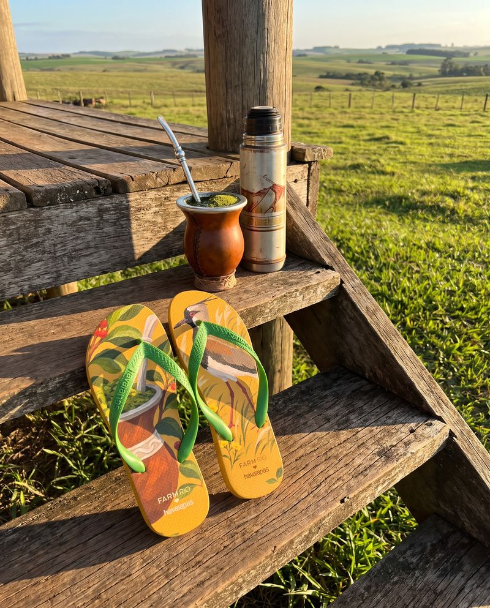

Rio Grande do Sul
Roda de Chimarrão
A cuia que passa de mão em mão e o quero-quero que guarda o pampa no fim da tarde.
14 / 14 · Sul

o coração
Encontre o coração
Ele não está desenhado em cima de nada. Aparece quando os próprios elementos da cena se encontram. Procure na ilustração e toque nele.
♥ duas folhas de erva-mate ao pé do mourão


o par
Dois pés, uma história
na palmilha
pé esquerdo com a cuia e galhos de erva-mate com frutinhos vermelhos; pé direito com o quero-quero entre o capim do pampa e florzinhas amarelas.
borracha e tira
mostarda do pôr do sol no pampa; tira verde-erva.
a arte da palmilha
Em díptico

caderno de campo
No Rio Grande, a roda começa cedo: a cuia de chimarrão passa de mão em mão, bomba de prata, erva verde e água quente que não pode ferver. No pampa o campo é largo e baixo, e o quero-quero grita guardando o ninho. O gaúcho de bombacha, lenço no pescoço e chapéu monta o cavalo crioulo; no 20 de setembro, o Desfile Farroupilha toma Porto Alegre. Nas Missões, as ruínas vermelhas de São Miguel guardam a história guarani. E o pôr do sol do Guaíba, visto da Usina do Gasômetro, é o mais bonito do mundo (pergunte a qualquer porto-alegrense).
trilha · Querência Amada (Teixeirinha) · milonga no violão · a gaita de botão no CTG
A âncora: a cuia de chimarrão com a bomba de prata e a erva verde.
pesquisa de campo
Na rua, antes do desenho




campanha
O par no lugar


o que ficou de fora
O que a gente evitou
- 01
Gaúcho caricato de piada.
- 02
Gramado e Natal Luz como o único RS: são turismo; o estado é o pampa e a roda de chimarrão.
- 03
Missões sem crédito guarani.
fotos de campo deste estado
 ← Santa Catarina
← Santa Catarina